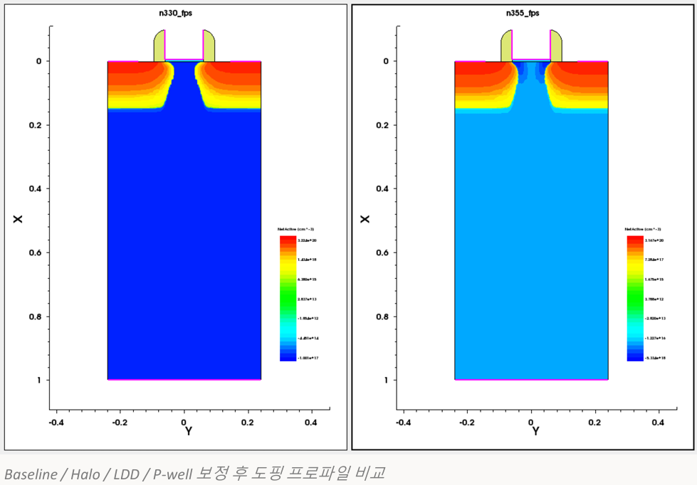
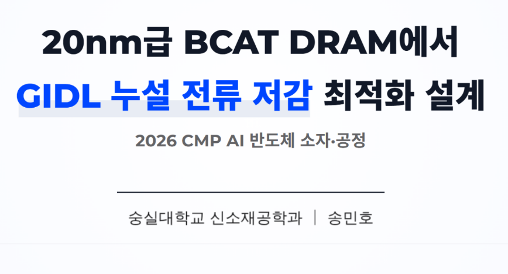
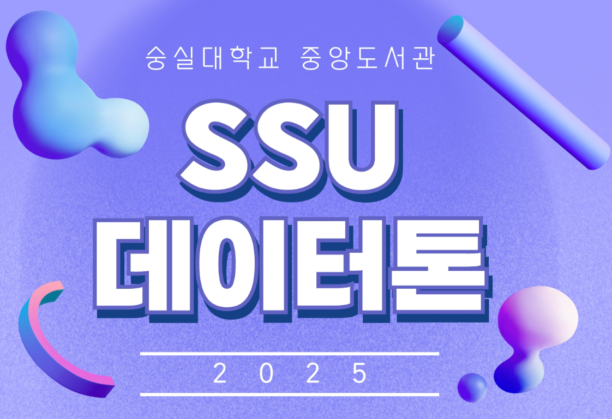
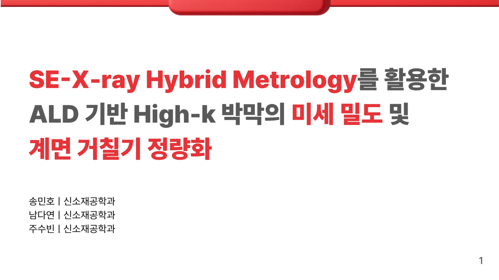
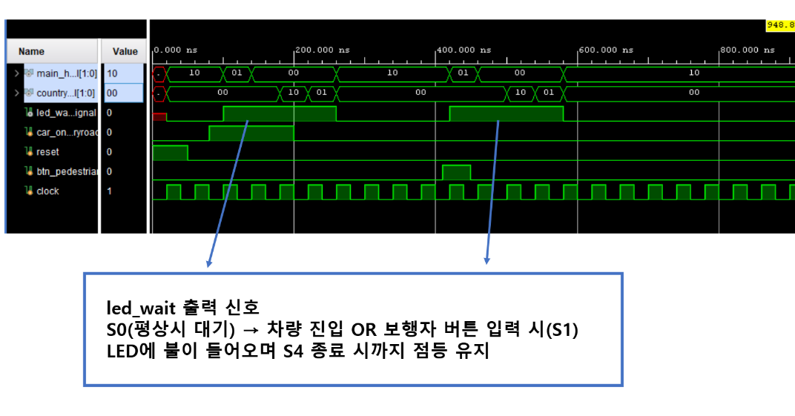

데이터분석준전문가
한국데이터산업진흥원 · 2026.03.06
송민호
Materials Science and Engineering
Double Major in Next-Generation Semiconductor Engineering
Soongsil University
반도체 공정과 소자 특성을 분석하고, 데이터와 시뮬레이션을 통해 공정 최적화 방향을 탐구합니다.
01 / ABOUT
신소재공학의 재료 이해와 차세대반도체공학의 공정·소자 관점을 연결합니다.
반도체 공정, 소자 시뮬레이션, 첨단 패키징, 데이터 분석에 관심을 두고 공정 조건과 물리적 특성의 관계를 정량적으로 해석하고 있습니다.
한국데이터산업진흥원 · 2026.03.06
Adobe · 2022.06.14
02 / PROJECTS
프로젝트 요약은 포트폴리오 안에서 확인하고, 상세 기술 문서와 원본 파일은 각 GitHub 저장소에서 이어서 볼 수 있습니다.

2026-1
NMOS Optimization & PMOS Process Conversion
Sentaurus TCAD로 NMOS 성능을 최적화하고, 기준 공정을 PMOS로 변환해 5개 공정 변수의 영향을 분석했습니다.
KEY RESULT 교과목 내 NMOS 최적화 콘테스트 공동 1위. Ion/Ioff 6.186 × 10¹¹, SS 82.953 mV/dec.
VIEW PROJECT
2026-1
423 K High-Temperature Process Optimization
고온·단채널 조건에서 발생하는 열화를 분석하고 Halo, LDD, P-well 공정을 순차적으로 최적화했습니다.
KEY RESULT Ioff 약 7 orders 감소, Ion/Ioff 23 → 1.39 × 10⁸, SS 80.4% 감소.
VIEW PROJECT
2026.04 — 2027.01
GIDL Leakage Optimization
Trench corner 고전계와 BTBT로 발생하는 GIDL 누설을 줄이기 위한 장기 공정·소자 최적화 프로젝트입니다.
CURRENT MILESTONE MEB depth를 변수로 확장하고 Cov–GIDL 상관관계를 분석하기 위한 모델 검증 및 환경 구축.
VIEW PROJECT
2025.12 — 2026.01
Semiconductor Technology Trend Analysis
62,199건의 공학 논문을 분류하고 Photolithography와 Advanced Packaging의 연구 흐름을 분석했습니다.
KEY DECISION false positive를 검증한 뒤 포토·첨단 패키징 중심으로 분류 전략을 전환.
VIEW PROJECT
2026-1 · Presented 2026.07.15
ALD High-k 박막의 미세 밀도 및 계면 거칠기 정량화
ALD 기반 High-k 초박막에서 SE 단독 역모델링의 파라미터 상관성과 해의 비유일성을 분석하고, XRR 중심의 X-ray 구조정보를 제약조건으로 결합하는 문헌 기반 Hybrid Metrology 전략을 정리했습니다.
PROJECT OUTCOME 계측 원리, 독립 구조정보, 3D 패턴 대응과 양산 적용 고려사항을 하나의 의사결정 흐름으로 연결하고 학회 발표로 확장했습니다.
VIEW PROJECT
2026-1
Traffic Signal Controller Enhancement
기존 FSM 상태를 유지하면서 보행자 요청 입력과 대기 LED 피드백을 Verilog로 통합했습니다.
KEY RESULT 차량·보행자 입력이 동일 신호 전환 시퀀스를 실행함을 시뮬레이션으로 검증.
VIEW PROJECT03 / EXPERIENCE
2026 SUMMER ANNUAL CONFERENCE OF ISE
SE–X-ray Hybrid Metrology 프로젝트를 특별세션에서 공동 발표하고, 3D 패턴 대응과 양산 적용 가능성, 계면 및 하부 구조의 상호작용에 관한 현장 피드백을 바탕으로 후속 분석 방향을 구체화했습니다.
VIEW CONFERENCE EXPERIENCESOONGSIL ENGINEERING BAND CLUB “HWANGTO”
1년간 임원 및 공연 팀장으로 재임하며 정기공연 5회, 대학 축제 1회, 새내기 배움터 1회 등 총 7개 무대의 세팅·일정·현장 운영을 총괄했습니다.
ACTIVITY RECORD04 / TECHNICAL TRAINING
SOONGSIL UNIVERSITY · NEXT-GENERATION SEMICONDUCTOR ENGINEERING
식각, 산화, 확산, 이온 주입, 증착 공정 시뮬레이션과 데이터 해석
NMOS/CMOS physics, SCE 개선, DRAM 및 Flash 소자 시뮬레이션
공정 구조 생성, 소자 특성 분석, 시뮬레이션 workflow 실습
05 / CONTACT
반도체 공정, 소자 시뮬레이션, 데이터 분석 프로젝트에 관한 대화를 환영합니다.
공개된 이메일 주소는 없습니다. 현재 연락 경로는 GitHub입니다.